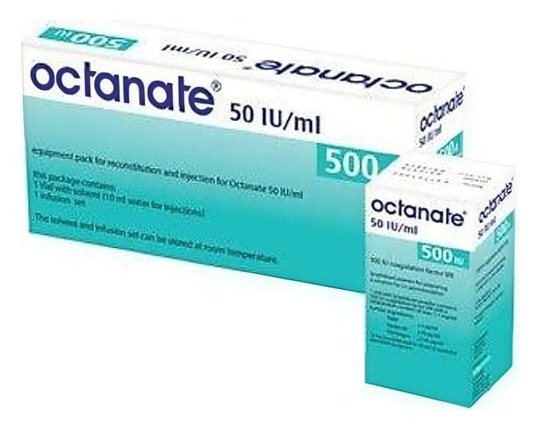

Octanate 500 IU IV Enjeksiyon İçin Toz İçeren Flakon, 1 Adet

Ne için kullanılır
KT · Bölüm 1OCTANATE 500 IU insan kanından elde edilmiş faktör VIII (insan kan pıhtılaştırma faktörü) içerir.
OCTANATE 500 IU aşağıdaki kanamaların önlenmesi ve tedavisinde kullanılır:
- Hemofili A (Doğuştan gelen Faktör VIII eksikliği), - Edinilmiş Faktör VIII eksikliği, - Faktör VIII’e karşı antikor (inhibitör) gelişmiş hemofili hastalarının tedavisi.
OCTANATE 500 IU ambalajında şunlar bulunur: Toz flakonu, 10 mL enjeksiyonluk su içeren çözücü flakonu, tıbbi cihaz içeren ekipman paketi (1 tek kullanımlık enjektör, 1 transfer seti [1 iki uçlu iğne ve 1 filtre iğnesi], 1 kelebek set) ve 2 alkollü mendil.